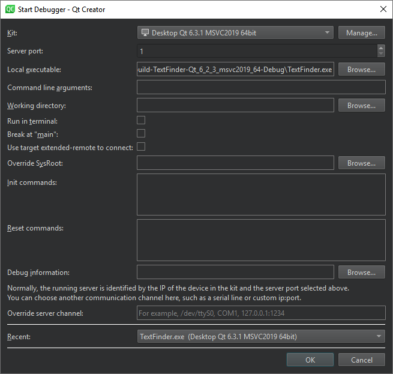

Debug remotely with GDB
In the common case where the remote machine or container already has GDBserver installed and remote execution of an application is already set up and works by selecting the Run button (or Ctrl+R), you can start remote debugging by selecting the Debug button (or F5).
In this case, Qt Creator launches and connects the debug server and the application on the remote machine and the actual debugger on the development host in the right order automatically.
This is the preferred method.
If the requirements for this automated setup are not met but your remote machine is capable of running GDB server (or any compatible probe using the GDB serial protocol), you can still use Qt Creator to debug your application.
Application running, SSH access to remote machine available
If you want to attach to an application that is already running on the remote machine and a debug server can be started via SSH from the local machine host, go to Debug > Start Debugging > Attach to running applications.
Application not running, terminal access to remote machine available
If a debug server cannot be started via SSH from the local machine, check your device documentation for alternative means to start a debug server.
If you have some terminal access to the remote machine, and a GDB server installed there, you can manually transfer the executable to the remote machine and start gdbserver by passing a port number and the executable:
gdbserver :1234 /path/to/executable
It then typically responds:
Process /path/to/executable created; pid = 5159 Listening on port 1234
On the local machine that runs Qt Creator:
- Go to Debug > Start Debugging > Attach to Running Debug Server.

- In Kit, select the build and run kit to use for building the project.
- In Server port, enter the name of the remote machine and the port number to use.
- In Local executable, specify the path to the application executable on the local machine.
- In Command line arguments, specify command line arguments to be passed to the executable.
- In Working directory, specify the working directory. It defaults to the directory of the build result.
- Select Run in terminal for console applications.
- Select Break at "main" to stop the debugger at the main function.
- Select Use target extended-remote to connect to create the connection in the
target extended-remote mode. In this mode, when the debugged application exits or you detach from it, the debugger remains connected to the target. You can rerun the application, attach to a running application, or use monitor commands specific to the target. For example, GDB does not exit unless it was invoked using the--onceoption, but you can make it exit by using themonitor exitcommand. - In Override SysRoot, specify the path to the
sysrootto use instead of the defaultsysroot. - In Init commands, enter the commands to execute immediately after the connection to a target has been established.
- In Reset commands, enter the commands to execute when resetting the connection to a target.
- In Debug information, specify the location for storing debug information. You cannot use an empty path.
- In Override server channel, specify a communication channel to use, such as a serial line or custom port.
- In Recent, select a recent configuration to use.
- Select OK to start debugging.
By default, a non-responsive GDB process is terminated after 40 seconds. To increase the timeout in GDB timeout, go to Preferences > Debugger > GDB.
For more information about connecting with target extended-remote mode in GDB, see Debugging with GDB: Connecting to a Remote Target.
Application running, terminal access to remote machine and gdbserver available
This case is almost identical to the previous section, except that gdbserver is started differently:
gdbserver --attach :1234 <PID of running application>
Use SSH port forwarding
To enable debugging on remote targets that cannot expose GDB server ports, map the remote ports to local ports using SSH tunneling. Qt Creator automatically detects the local and remote ports.
To turn on SSH port forwarding:
- Go to Preferences > Devices.

- In Device, select Remote Linux Device.
- Select Use SSH port forwarding for debugging.
- Select OK.
See also How To: Debug, How To: Develop for remote Linux, GDB, Debugging, Debuggers, Debugger, and Kits.